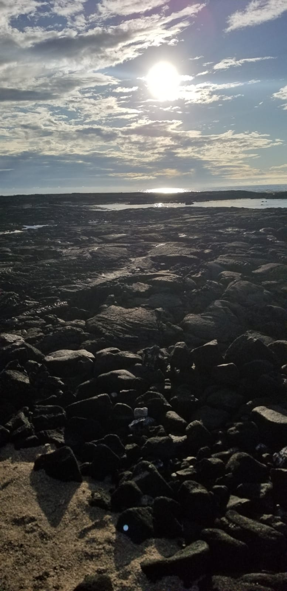
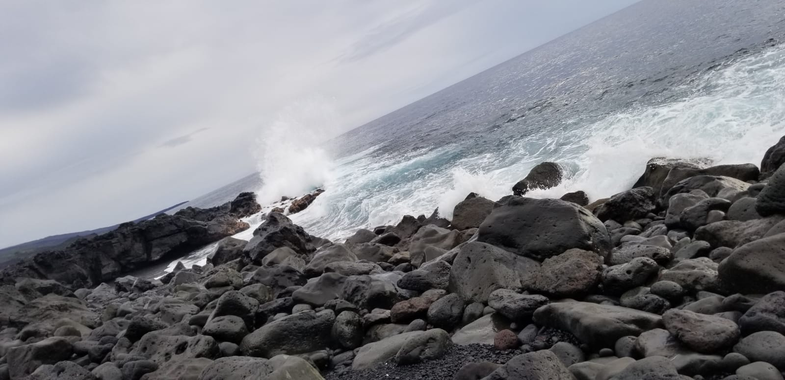
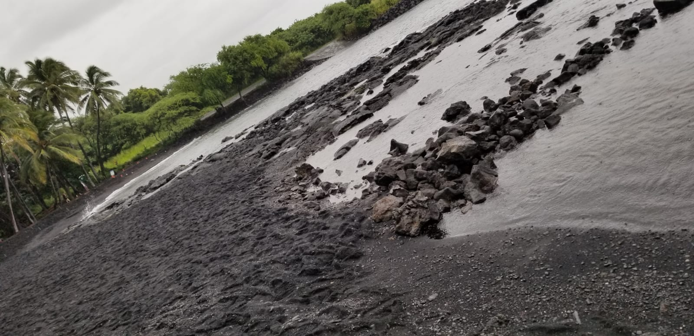
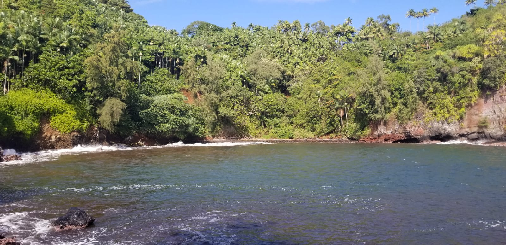
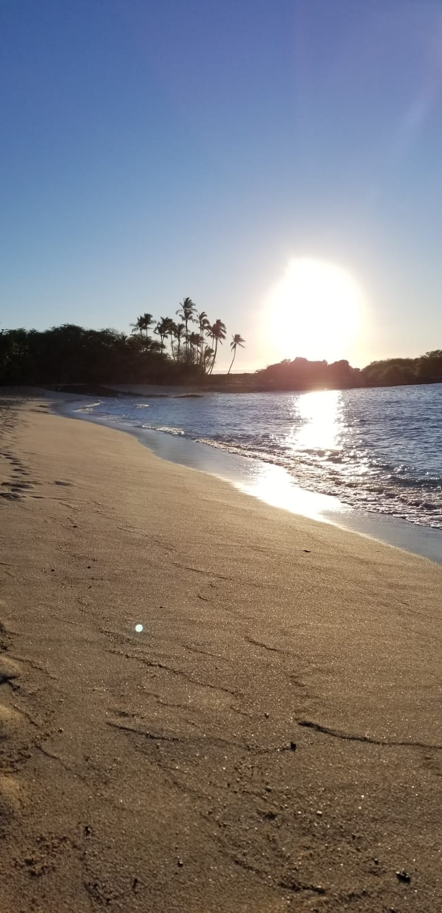
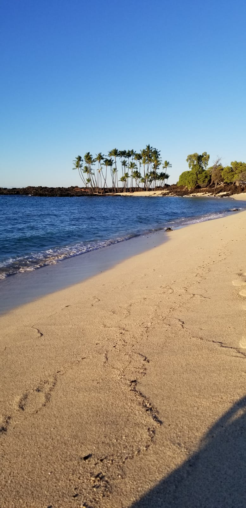
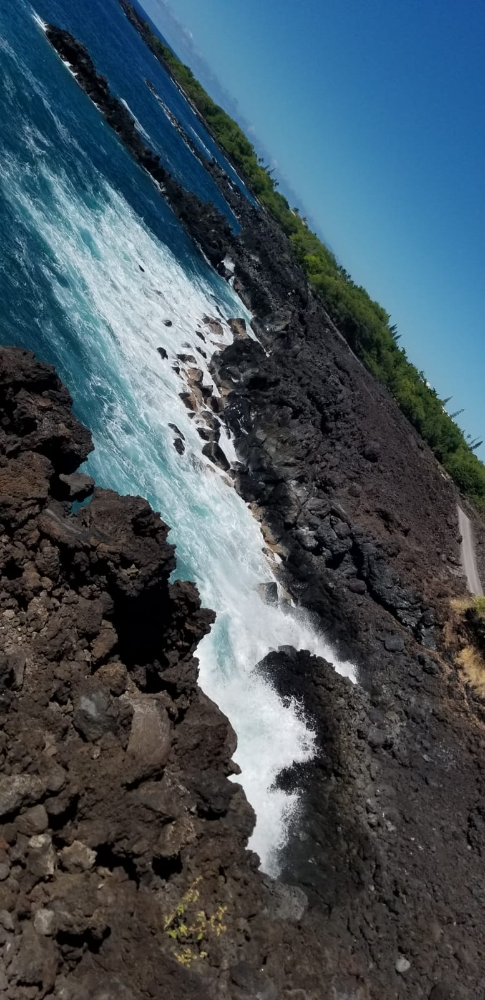
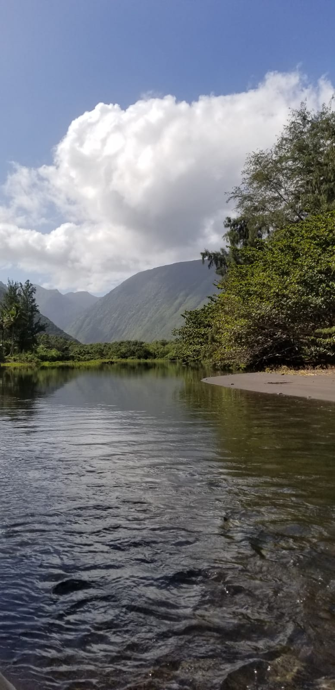
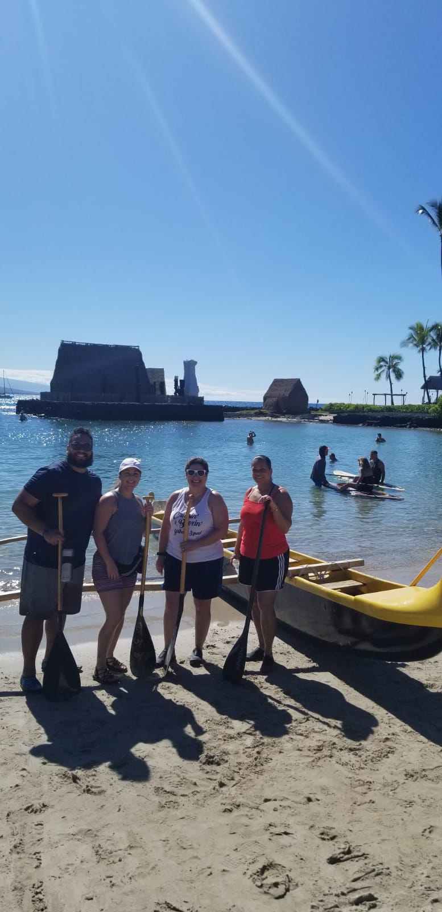
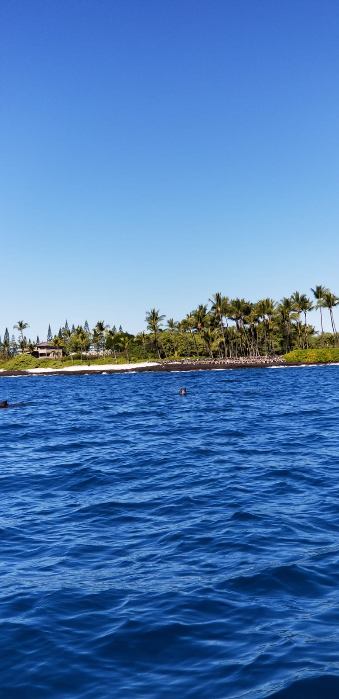

While in Hawaii we visited several different beaches throughout the trip. Not only were they different in location, but they were also different in attributes. We visited beaches with black sand, red sand and white sand. We also visited a beach that had a shoreline of pebbles. Some of these beaches were accessible by car with a small hike and some required a very long and steep trek down a mountainside. Needless to say no 2 beaches were alike and neither were the adventures getting to them.
One of the things I thought I'd never catch myself doing in Hawaii was going into the ocean on a canoe. With the help of a local guide me and my family did just that. We faced some fears, put our game faces on and canoed about a half mile off shore. While on the canoe we heard stories about some of the cities that you could see lining the sea shore. Then to our very pleasant surprise we were visited by some creatures of the sea, dolphins. More curious than anything they came and checked out what we were doing and then went on about their business.
